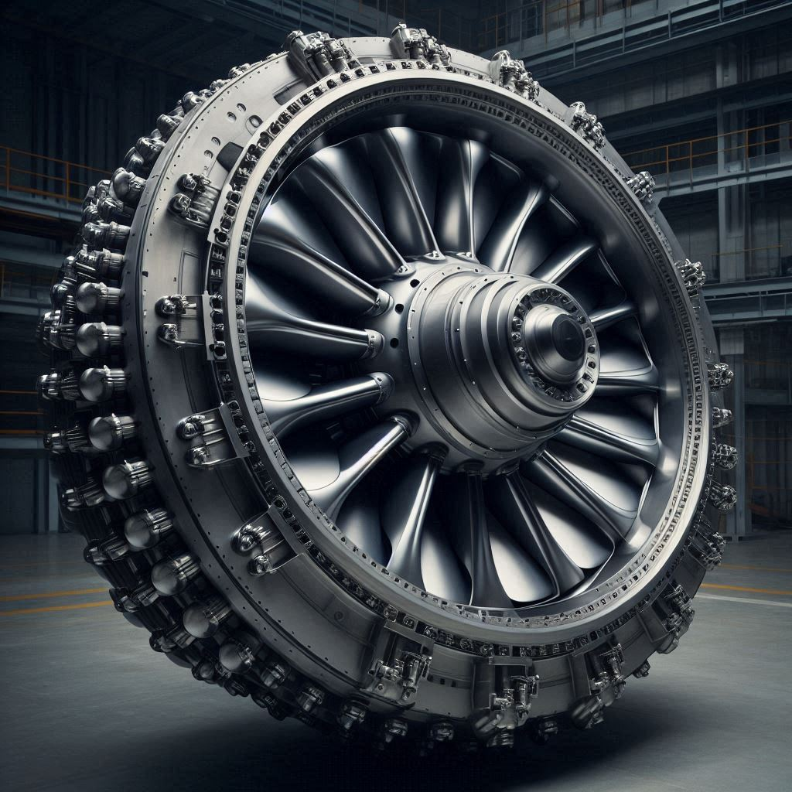

TL;DR técnico: Tubería de acero 2m de diámetro, 500m de longitud. Cámara de presión en superficie (diferencial 0.3 atm, factor seguridad >3:1). Dos turbinas Pelton de 13 MW cada una. Materiales estándar de industria marina: cotizable, fabricable y mantenible.
🗣️ En lenguaje sencillo
¿Qué contiene esta sección? Los "planos" del proyecto: qué materiales, qué dimensiones, qué tolerancias. No son conceptos abstractos — son especificaciones que un fabricante puede cotizar hoy.
¿Por qué 2 turbinas? Redundancia: si una falla, la otra sigue generando. El sistema nunca se detiene completamente.
Como el pliego de condiciones de una obra de construcción: materiales, dimensiones, tolerancias y proveedores. Sin este documento, no hay constructora que presupueste.
❓ Preguntas frecuentes
¿El acero marino aguanta la corrosión?
Sí, con protección adecuada: revestimiento epoxídico interior + ánodos de sacrificio exterior. Es la tecnología estándar de pipelines submarinos de la industria petrolera.
¿Quién puede fabricar esto?
Fabricantes de tuberías offshore (Tenaris, ArcelorMittal), turbinas Pelton (Andritz, GE), y plataformas marinas (Repsol, Dragados Offshore). Tecnología existente, no experimental.
¿Por qué no una sola turbina más grande?
Una turbina de 26 MW submarina costaría €15-20M solo en la cámara de presión. Dos turbinas de 13 MW en superficie cuestan €4-6M en total y además ofrecen redundancia.
1. Componente 1: Tubería Submarina
1.1 Especificación de Tubería
Parámetro
Valor
Material
Acero al carbono con revestimiento epoxídico
Diámetro interior
2.0 m
Diámetro exterior
2.1 m
Espesor pared
8-12 mm
Longitud
500 m (+ 50m excedente)
1.2 Cálculo de Espesor Mínimo (Fórmula Barlow)
t = (P × D) / (2 × S × E - P × Y)
P = 50.66 bar D = 2000 mm
S = 250 MPa E = 0.85 Y = 0.4
En práctica: 8-12 mm (esfuerzo diferencial mínimo,
presión interior ≈ presión exterior)
1.3 Protección y Recubrimiento
Epoxídico: 3-5 mm de espesor
Ánodos de sacrificio: Zinc/aluminio, cada 5 metros
Reemplazo ánodos: Cada 3-5 años
1.4 Inspección y Mantenimiento
Tarea
Frecuencia
Inspección visual ROV
Anual
NDT ultrasonidos
Cada 2 años
Limpieza exterior
Cada 3 meses
Limpieza interior (pig)
Cada 12 meses
2. Componente 2: Cámara de Presión Diferencial
2.1 Especificación
Parámetro
Valor
Forma
Cilindro horizontal sellado
Diámetro interior
3.0 m
Longitud
10 m
Volumen
70.7 m³
Presión operativa
0.5-1.5 atm (controlada)
Presión de diseño
50 atm (emergencias)
Material
Acero inoxidable 316L
2.2 Sistema de Control
Elemento
Especificación
Válvula de alivio
50 atm (emergencia)
Válvula de retención
Previene reflujo
Sensor de presión
0-50 atm, salida 4-20mA
Sensor de flujo
Ultrasónico
PLC
Siemens S7
3. Componente 3: Turbina Pelton
3.1 Especificación
Parámetro
Valor
Tipo
Pelton de alta presión, diseño submarino
Potencia nominal
32 MW
Velocidad de rotación
600 RPM
Caudal
7.85 m³/s
Presión de entrada
1.5 atm = 152 kPa
Diámetro rotor
1.8 m
Número de álabes
24-30
Eficiencia total
85%

*Imágenes generadas con inteligencia artificial. Utilizadas únicamente para captar la atención del lector y representar conceptualmente el proyecto.
4. Componente 4: Bomba Vacío
Parámetro
Valor
Tipo
Compresor de desplazamiento positivo
Potencia
1.5-2 MW eléctricos
Setpoint presión cámara
0.7 atm
Ubicación
En tierra, caseta de control
PLC monitoriza presión cámara
Si P sube → Bomba aumenta potencia
Si P baja → Bomba reduce potencia
Setpoint automático: 0.7 atm
5. Componente 5: Sistema de Desalojo (Sifón)
Parámetro
Valor
Tipo
Sifón con válvula de alivio
Diámetro
1.0 m
Material
Acero inoxidable
Longitud
550 m total
6. Componente 6: Generador Eléctrico
Parámetro
Valor
Tipo
Generador síncrono de imanes permanentes
Potencia
32 MW
Velocidad
600 RPM
Voltaje
11 kV
Frecuencia
50 Hz
Factor de potencia
0.95
Transformador elevador: 11kV → 33 kV (pérdida 2%)
Cable submarino: 33 kV, armado, 10 km hacia tierra
Estación receptora: En tierra